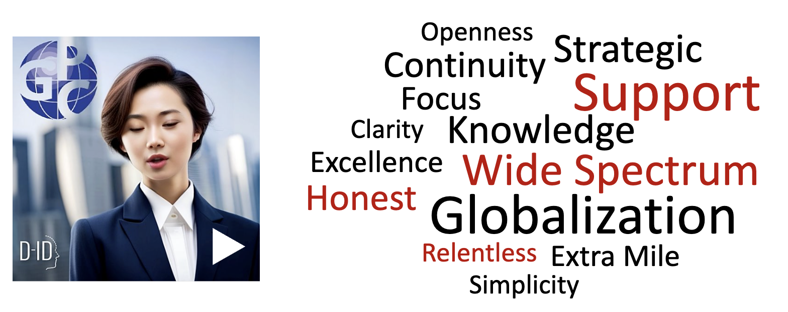
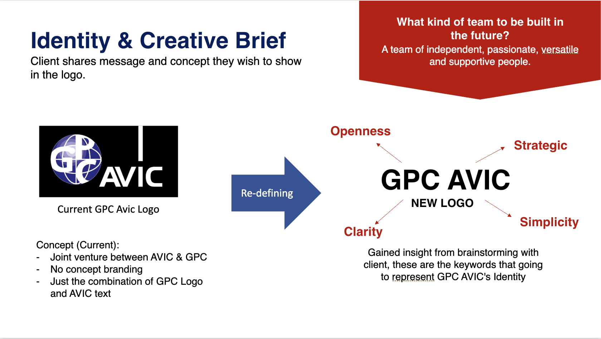
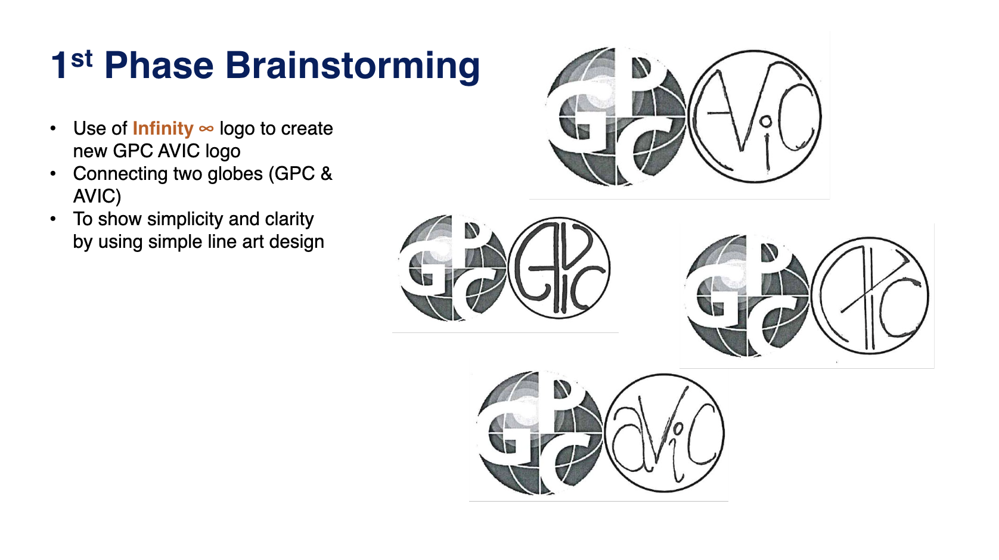
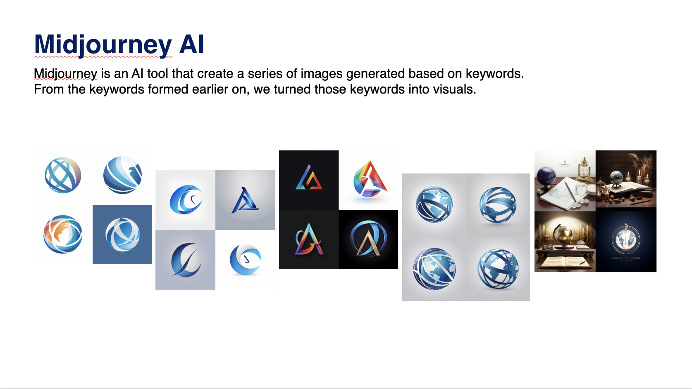
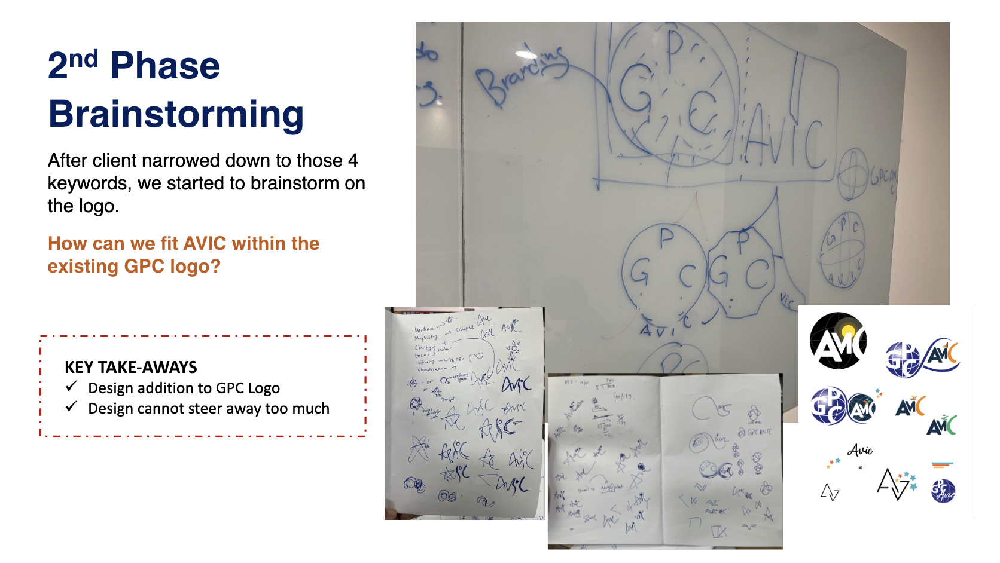
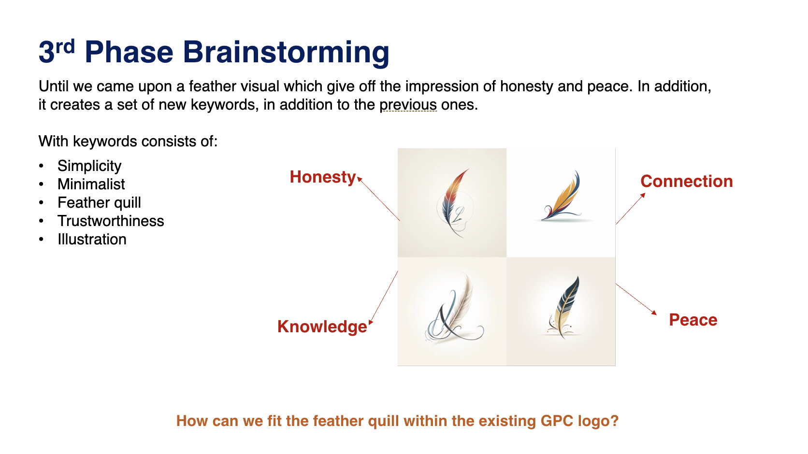
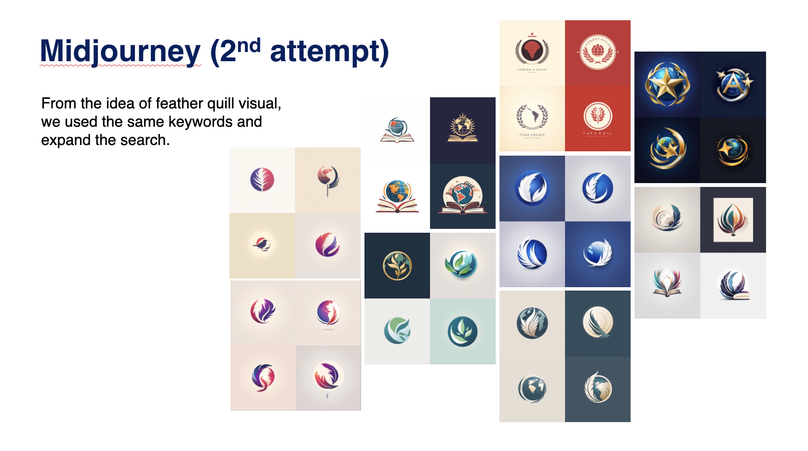
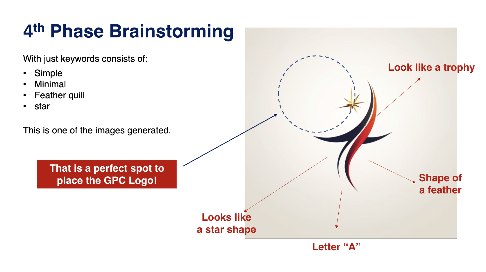
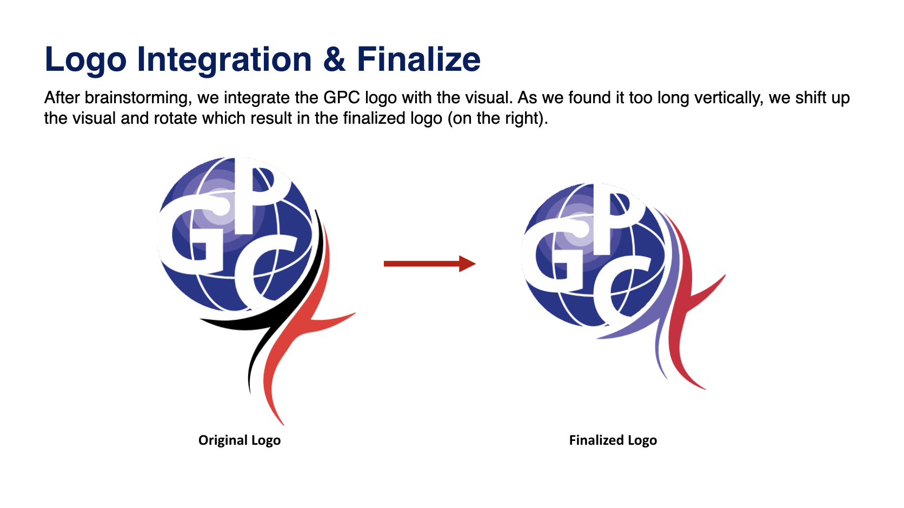
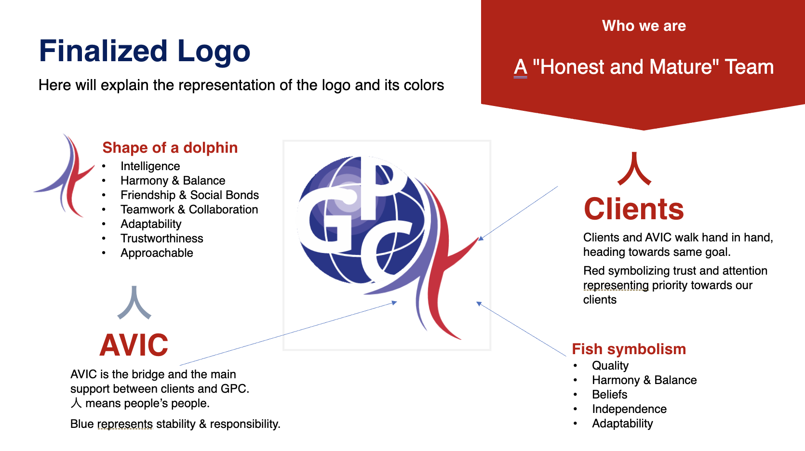

Derived logo for GPC Avic that builds on the visual language of the parent GPC brand. The signature globe element was preserved to reinforce brand recognition, with new graphic accents incorporated to establish a distinct identity for the Avic division.
Client wants to retain the GPC Logo as it was already an established brand. Since this is for accounting & tax team, client requested to have little enhancement but make sure to be able to differentiate between these two logos
Client provided me an AI video, introducing GPC Avic and what they provide. From that video we extracted these keywords:

I documented the logo journey in powerpoint. Asking myself these questions:


Had the idea of using infinity to link both GPC and Avic, but the outcome wasn't too great. Visually, it looks weird to have 2 globes side by side. We proceed to Midjourney, and search for inspiration based on the keywords generated previously.


I did a lot of sketch. Brainstormed with the client. We can't touch the main GPC logo. That was the tough challenge on my side. How to fit Avic in the existing GPC logo?

Came an idea. A quill. with a globe. We are getting somewhere but still we need some inspiration how these two can be combined. Went back to midjourney again.


I tweak the quill, simplify it and make it into "A" shape. and boom! There's a place to put the GPC logo beside the quill!


The shape of A can also be interpreted as 人 or shape of a dolphin.